I like figuring out how things work — and AI has given me a whole new set of things to take apart and rebuild. Here are some experiments, prototypes and small products I’ve built.
Prototyping and building small working products with AI; data visualisation.
Experience
{{j.dates}}{{j.company}}· {{j.role}}{{j.body}}
Kind words
“
Parveen has a rare ability to simplify complex problems and turn them into intuitive, impactful experiences.
PSPriya SharmaProduct Manager at Yaper
“
Brings clarity, structure and creativity to every problem. Would love to work again!
SISneha IyerProduct Designer at Yaper
“
Thoughtful, ownership driven, and always brings a user-first mindset to the table.
AMArjun MehtaEngineering Lead at Yaper
“
Incredibly curious, collaborative, and always pushes for a better solution.
RVRohit VermaHead of Product at Yaper
“
A great mix of strategic thinking and hands-on design execution. Super easy to work with!
KMKaran MalhotraFounder, former colleague
About
I started in visual design, moved deeper into UX, and eventually became more interested in the product behind the screens.
One of my biggest learning chapters happened away from a design tool: from 2021 to 2023 I ran my own café, BaariFood & Hospitality Awards, 2023, which taught me to listen, observe, solve real problems and take ownership.
Have a project in mind?
I’m always up for interesting problems, collaborations, or just a good design conversation.
Yaper was working, but the experience was getting harder to understand. Its structure had become more complicated than the user's mental model.
What I changed
Opened the app before login, built trust into the home screen, moved payment details into orders and earnings out of the wallet, allowed several bank accounts per user, and gave notifications their own place.
The result
A simpler product built around clearer mental models, with a design system built alongside it.
Before and after
The home screen, before and after the revamp.
Drag the handle to compare. The redesigned home leads with live activity and total earnings, so someone opening Yaper for the first time sees that it is active and trusted before they are asked to sign in.
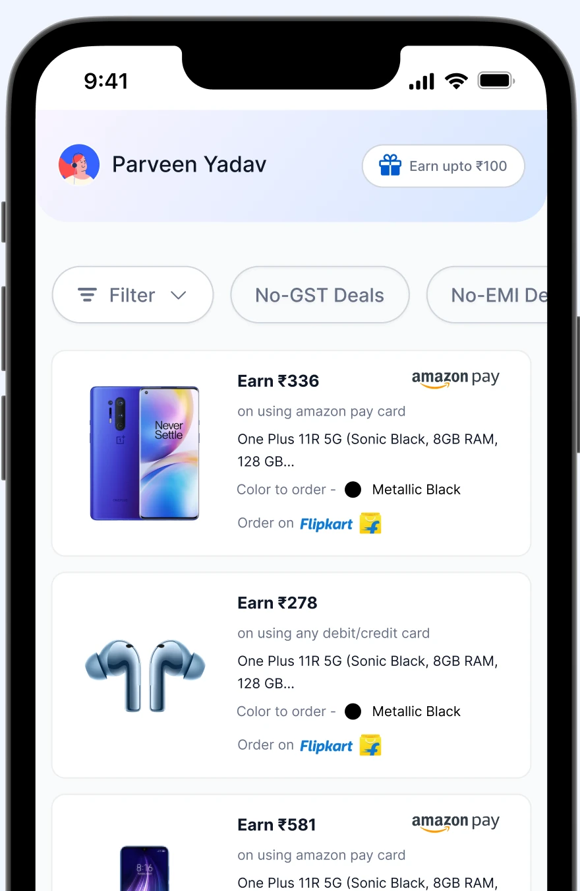
BeforeAfter
Context
Yaper was working. But the experience was getting harder to understand.
As Yaper grew, more features and workflows were added around the core experience.
The result wasn't necessarily a broken product. It was a product where:
The system's structure was starting to become more complicated than the user's mental model.Users had to understand
When they needed to log in
Where their order information lived
Where to find transaction details
What their wallet balance actually meant
How to manage different bank accounts
Where to find important notifications
Key insight
The challenge wasn't to redesign individual screens.
It was to make the entire experience feel simpler.
The journey
We looked at the experience as one connected journey.
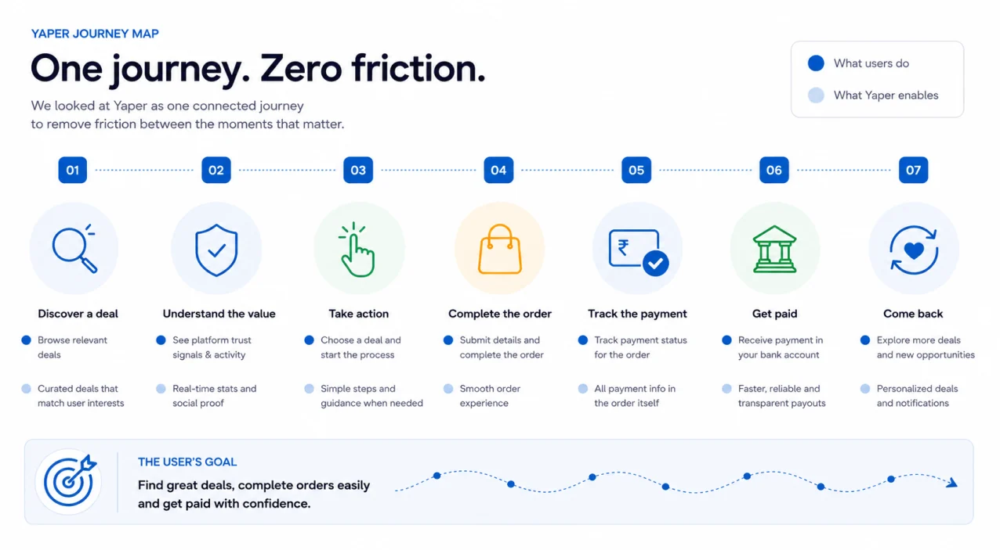
The shift
The problems looked like UI problems. They weren’t.
{{p.n}}
{{p.t}}
{{p.d}}
Eight decisions
{{d.num}}{{d.chapter}}
{{d.q}}
{{d.sub}}
{{t}}
{{d.quoteT}}{{d.quoteD}}
{{d.l.label}}
{{t}}
{{q.k}}{{q.t}}
{{d.l.listTitle}}
{{t}}
{{d.l.chipsTitle}}
{{c.t}}{{c.arr}}
{{d.l.after}}
{{d.l.big}}
{{d.l.note}}
{{d.r.label}}
{{t}}
{{q.k}}{{q.t}}
{{d.r.listTitle}}
{{t}}
{{d.r.chipsTitle}}
{{c.t}}{{c.arr}}
{{d.r.after}}
{{d.r.big}}
{{d.r.note}}
{{p.n}}
{{p.n}}
{{p.t}}{{p.d}}
Why
{{d.why}}
Trade-off{{d.t1}}↕{{d.t2}}
{{d.tb}}
Outcome
{{d.out}}
Design system
I built the system alongside the product.
The redesign touched multiple areas of the product. Consistency couldn't be treated as a final polish step, so I built and extended the design system alongside the new experience.
Why: multiple product areas needed to feel like one system.
A simpler product built around clearer mental models.
The redesign created a more connected experience across discovery, orders, payments, account management and notifications.
{{r.k}}
{{r.t}}
Reflection
The biggest lesson wasn't about UI. It was about mental models.
A separate Transactions tab made sense to the system. A single bank account made sense when Yaper was smaller. Putting everything on the home screen made sense when there was less information to manage.
But products evolve faster than the assumptions behind them. The real work in this revamp was recognising when those assumptions no longer matched how people actually used Yaper — and redesigning the product around that reality.
Turning a gift card into cash, without losing the user's trust along the way
A self-serve flow that lets people sell Amazon and Flipkart gift cards for an instant UPI payout — designed by prototyping the logic in Claude before a single screen was drawn.
RoleSolo Product Designer
ScopeEnd-to-end flow, prototyping, dev handoff
ToolsClaude, Figma Make, Yaper DS
StatusLive
The problem
Cashback orders depended on external cardholders, and that fulfilment model was quietly losing money.
What I did
Designed a self-serve flow for selling gift cards, worked out its logic in Claude and Figma Make first, then rebuilt it on the Yaper Design System.
The result
A flow built around trust and failure states, handed off with a projected 30%+ lift in commission per order.
01Context
The old fulfilment model was quietly losing money
Yaper's cashback orders were being fulfilled by external cardholders — a dependency with three structural cracks in it.
Crack 1
Cardholder availability was unpredictable — orders sat waiting for a person to show up.
Crack 2
Card processing fees ate into the commission on every single order.
Crack 3
Cardholders delayed transactions, and delays turned into fulfilment backlogs.
The product team's answer: buy discounted Amazon and Flipkart gift cards directly from consumers, and use those balances to fulfil cashback orders instead. No cardholder in the loop, no card processing fee.
30%+
projected lift in commission per order, just from removing the cardholder split and processing fees.
02The design problem
Operationally simple. Emotionally, a lot to ask.
A user submits a code, Yaper validates it, money lands in their UPI account. But a gift card is liquid cash — the moment its code and PIN are shared, ownership is gone. The screen has to answer four questions before the user will type anything in.
“How much money will I actually get?Clarity over abstraction — a rate on its own is not an answer.
“What is happening to my card right now?Visible verification, not silence while the system checks.
“What if my card gets rejected?A clear, non-punitive error — not a dead end.
“Where is my money?Verification and settlement have to read as two separate moments.
03Process
Prototyping the logic before touching a single pixel
Instead of assembling high-fidelity screens first, I inverted the usual sequence: work out the state machine, then make it interactive, then bring it into the design system.
Traditional workflow
Requirements↓Static wireframes↓Polished screens↓Prototype↓Gaps found late
What I did instead
Requirements↓Claude — logic & edge cases↓Figma Make — rough flow↓Test the behaviour↓Rebuild on Yaper DS → handoff
Step 1 — Claude. I fed the raw product proposal in and asked it to stress-test the state machine: every input state, verification stage, rejection reason, and payout status I had not thought of yet. That produced a structured matrix before any screen existed.
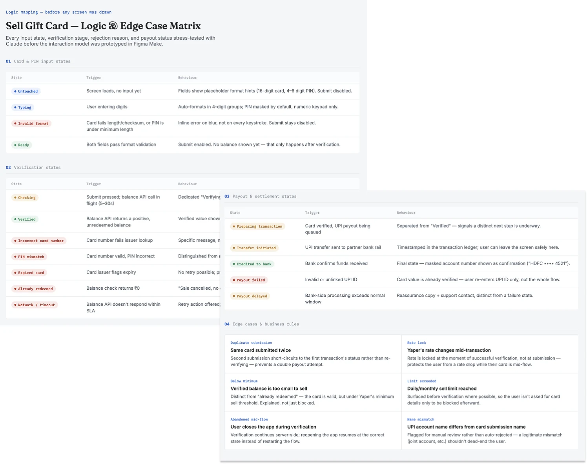
Step 2 — Figma Make. I turned that logic into a clickable, end-to-end flow — not for visual polish, but to feel the behaviour: typing a 16-digit card code and PIN, and sitting through the real latency of a verification screen.
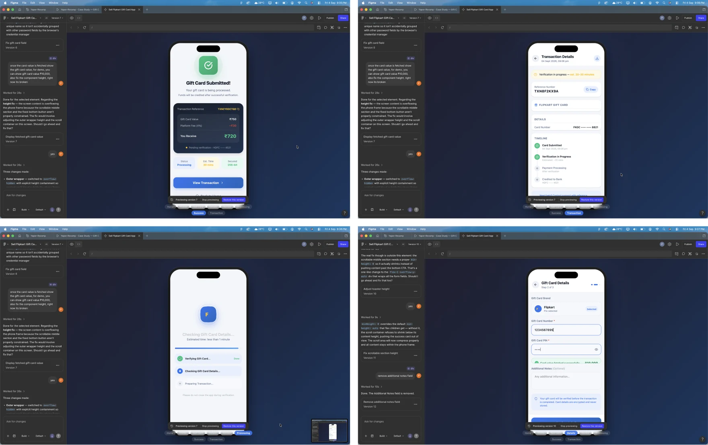
04What the prototype exposed
Three things a static wireframe would have hidden
Clicking through a rough, interactive version surfaced flaws that do not show up on a flat artboard.
ASurface absolute cash, not a rate
Before
"Sell at 4% discount" — the user has to do the mental math themselves, mid-transaction.
After
Enter ₹10,000, see ₹9,600 update live. No arithmetic required to know what you are getting.
Before: what the user saw4% discount
On a ₹10,000 card. The payout is left for the user to work out.
After: what the user sees₹9,600
You receive, via UPI.
BDecouple submission from settlement
Before
"Success! Your card has been submitted" — read by users as money already in their account.
After
Three distinct, explicit milestones: Submitted → Verified → Paid.
CLive checking, not a system freeze
Before
A generic loader for a 5–30 second balance check reads as a crashed app.
After
A dedicated "Verifying card" screen that names what is being checked, in real time.
05Production rebuild
What Figma Make gets you is not what ships
AI prototyping tools are excellent for testing an interaction model — they do not produce production-grade front end. Once the logic held up, the whole flow was rebuilt natively on the Yaper Design System.
Tokens
Detached text styles and arbitrary hex values were re-anchored to Yaper's semantic color, type, and radius tokens.
Components
Rebuilt on the core library — Title Bar, Status Bar, Bottom Nav, and Input Field variants for active, focus, error, and masked states.
Coherence
The feature needed to feel native to Yaper, not bolted on — consistent with the rest of the app revamp.
06System architecture
Designing the failure states first
In a financial product, trust is built in the edge cases. These were locked before the happy path.
StateGranular card errors
Trigger
User enters invalid card details.
Solution
No generic "Invalid card" alert. Split into Incorrect Card Number, PIN Mismatch, or Expired Card.
StateAlready redeemed
Trigger
The card's balance is ₹0.
Solution
"Card already redeemed. No charges applied" — explicit reassurance that the account was not penalised.
StateVerification latency
Trigger
API balance check takes several seconds.
Solution
A dedicated status screen with a live checking indicator, so the wait reads as progress.
StatePayout timeline
Trigger
Bank IMPS/UPI settles after verification, not instantly.
Solution
A transaction tracker that separates "Card verified" from "Funds disbursed," cutting support tickets.
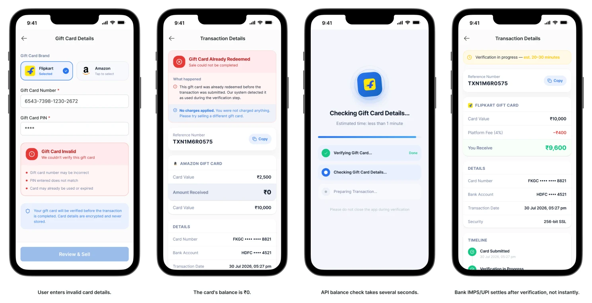
07Trust architecture
Four patterns to lower hesitation at the point of sale
Compliance indicator
An explicit RBI-compliance banner on the landing screen, before a user ever types a card number.
A three-step mental model
Select brand → Enter details → Instant UPI payout, laid out upfront so nothing feels open-ended.
Sensitive data masking
Card numbers and PINs stay obscured by default everywhere except active entry.
A permanent ledger
A submission history showing past receipts, approved payouts, and rejection reasons — for after the transaction, too.
08Developer handoff
What shipped alongside the wider app revamp
Interactive state trees
Default, typing, focused, loading, success, and error, specced for every form field.
Dynamic content sheets
Copy matrices for every validation error code, ready for localisation.
Status machine spec
SUBMITTED → CHECKING → VERIFIED → PAID → REJECTED, mapped to backend API responses.
Edge case coverage
Network timeouts, duplicate submissions, and zero-balance cards, documented.
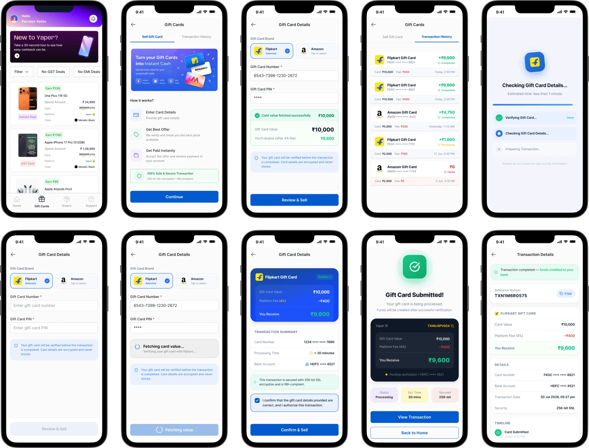
09Takeaways
What this project changed about how I work
AI moves prototyping from presentation to validation
The value was not visual generation — it was collapsing the time it takes to turn business rules into something you can actually critique.
Test interaction before you style it
Working in a rough format keeps you from falling in love with visual details that do not hold up mechanically.
In fintech, trust lives in the edge cases
The happy path rarely defines a transaction involving real money. Trust is earned in how failure, latency, and rejection get handled.
ToolsFigma · Figma Desktop Bridge (MCP) · Dev Mode
StatusSystem and product migration shipped · Engineering handoff in progress
The problem
Yaper had been redesigned many times but never systemized, so every new screen made the same decisions again.
What I did
Built a two-tier token architecture, foundations and a core component library, migrated the Yaper Revamp onto it, and set up an audit framework for drift.
The result
Tokens, the component library and the product migration shipped. Engineering handoff is in progress.
System map · 5 layers · 1 product
01FoundationsColor · Typography · Spacing · Icons
02TokensPrimitive · Semantic · Light / Dark
03ComponentsInput · 22 var. · Order Card · 10 · Buttons · States
The interface had been shipped many times. It had never been systemized once.
Yaper is a cashback and deals platform that had gone through several redesigns as the product evolved. Each redesign improved the experience in front of the user, but the underlying design language remained largely screen-based.
By the time I started working on Yaper Revamp, the file had accumulated the effects of that approach: hardcoded colors and type values, duplicated components, inconsistent patterns, and no single source of truth for what the interface should use.
The problem wasn't simply that the UI looked inconsistent. The problem was that every new screen required the same decisions to be made again.
Before designing more screens, I needed to design the system those screens were made from.
Before · accumulated drifthardcoded value · #025ACElocal styleduplicate componentfont-size: 15pxpadding: 14px 22pxone-off pattern · OrderCard_v2
The system uses a two-tier token architecture: primitive values underneath semantic roles.
Primitiveblue/500
→
Semanticbrand/primary
→
Used inButton · interactive state · focus ring
Primitivegray/900
→
Semantictext/primary
→
Used inComponent typography · headings · body
Primitive tokens contain the raw values. Semantic tokens describe how those values are used. Components reference the semantic layer rather than the primitives directly.
Components depend on roles, not colors.
Semantic token map · Light ↔ Dark
Every semantic token has a resolved value for both modes. Components read from the semantic name; the mode decides which primitive shows up on screen.
surface/primary#FFFFFF#1B1F26
surface/page#F7F8FA#0F1216
text/primary#14171C#F4F5F7
text/secondary#4B535C#98A0AD
border/subtle#E1E5EA#2A2F38
brand/primary#025ACE#4A90F5
Same components, same tokens. Semantic tokens stay stable; their resolved values change by mode.
Order HistoryExport
ACCEPTEDApple iPhone 17 Pro
Spend amount₹1,34,999
You earn₹1,200
DELIVEREDApple Earbuds
Spend amount₹12,999
You earn₹412
Claim cashback
05Foundations
The rules underneath the components.
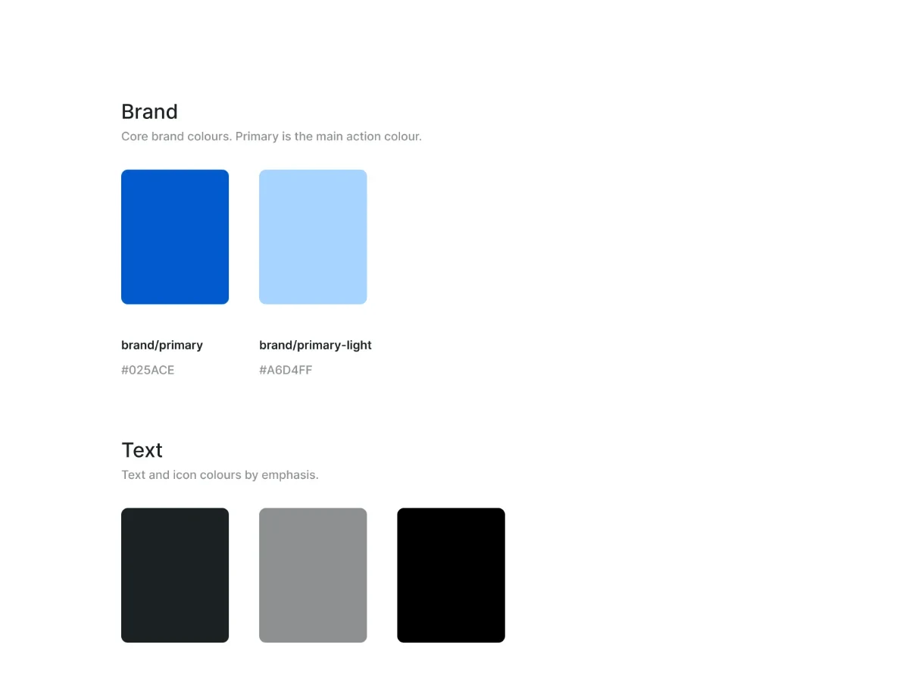
Color · brand · surface · feedback · badge
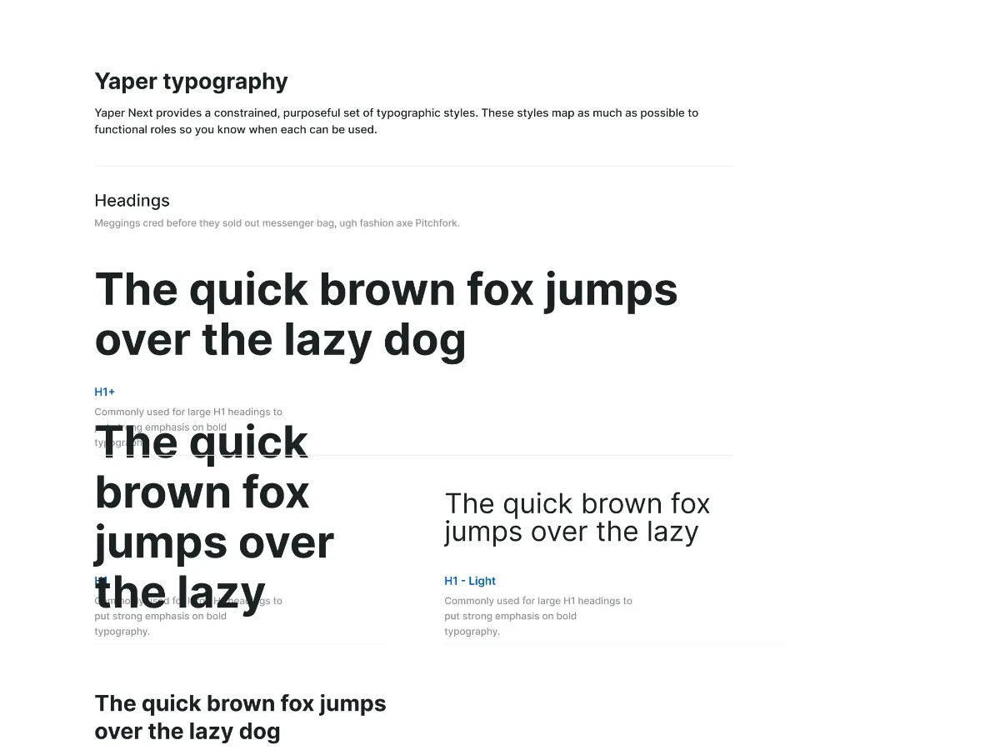
Typography · headings · paragraphs · labels
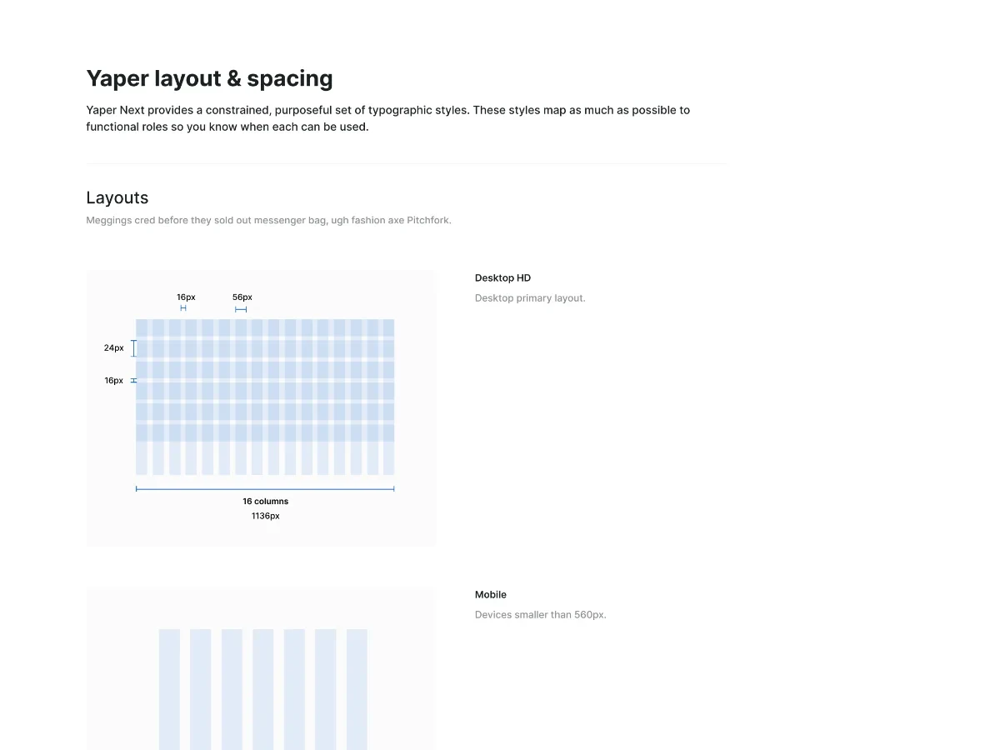
Layout · grid · spacing · radius
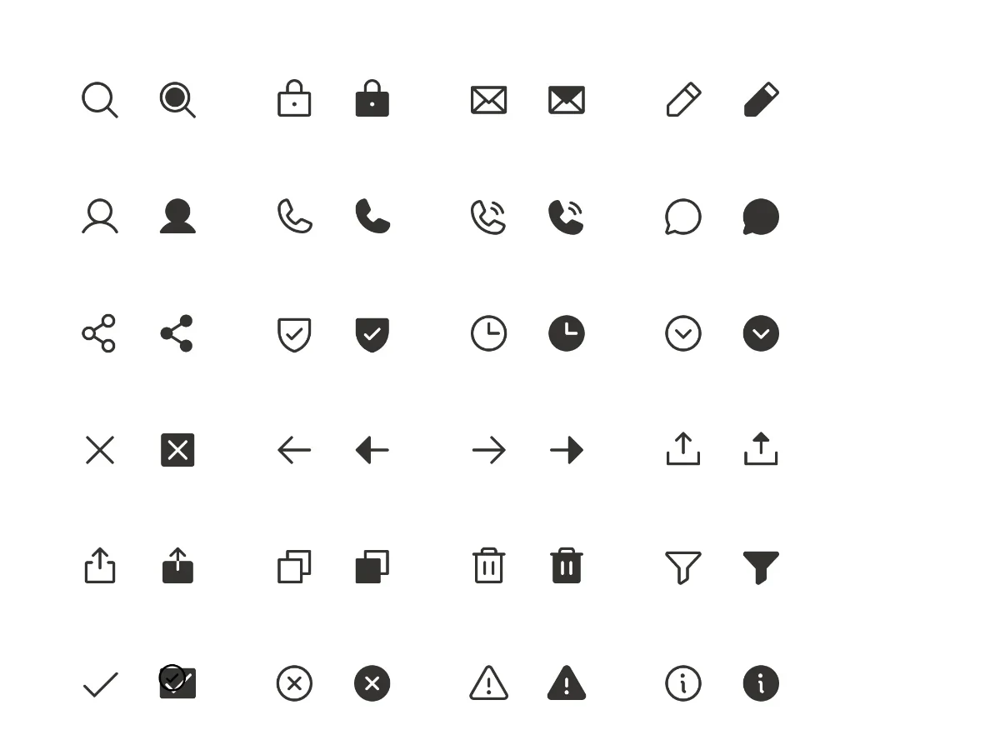
Icons · regular & fill · deduplicated
06Components
Components became systems of rules, not collections of screens.
The goal wasn't simply to recreate components already visible in Yaper. It was to define the states, properties, and relationships that made each component reusable.
ComponentInput Field
One component. Multiple states and configurations. A shared source of truth.
Moving repetitive system work out of manual workflows.
A design system contains a large amount of repetitive work: creating variables, applying naming conventions, generating component structures, and migrating existing screens.
I used a programmatic Figma workflow through Figma Desktop Bridge (MCP) to handle parts of that work in batches.
The design decisions are the hero. MCP is the implementation mechanism that helped scale the work — turning batch operations into reproducible actions rather than manual repetition.
Execution constraints
5–7s execution timeout
Operations chunked into batches
Local vs. library variables use different API paths
Some import/swap ops share a single execution
09From library to product
A design system only proves its value when the product uses it.
The Yaper Revamp became the first real test of whether the system could support the complexity of the product rather than simply look organized inside Figma.
10Governance
What happens after the system ships?
Any design system can drift back toward inconsistency. The audit framework classifies issues by their severity so maintenance work is triaged rather than reactive.
P0CRITICAL
Breaks trust
Issues that can affect user confidence or make the experience feel fundamentally wrong.
P1HIGH
Breaks consistency
Meaningful deviations from established tokens, components, or patterns.
P2LOW
Cosmetic
Minor visual differences with limited product impact.
11Outcome
What changed.
System
Token architecture established · Foundations defined · Core component library shipped · Light / Dark modes established
Consistency is one of the visible outcomes of a design system, but it isn't the most valuable one.
The more important outcome is reducing repeated decisions.
Before the system, every new screen could introduce another interpretation of color, spacing, typography, or component behavior. After the system, many of those decisions are already encoded.
The biggest improvement wasn't making Yaper more consistent. It was making the next redesign less expensive.
Redesigning Yaper to fix the activation → trust → reward loop
A credit card cashback app had competitive rewards that users simply weren't discovering, trusting, or redeeming. Here's how a strategic redesign changed that.
RoleLead Product Designer
ScopeEnd-to-end UX strategy & execution
Timeline8 weeks (Phase 1)
The problem
59% of new users left during onboarding, before seeing a single deal. The app asked for PAN and bank details before showing any value.
What I did
Re-sequenced the product around one principle (show value, earn trust, then ask for commitment) across onboarding, home, redemption and the wallet.
The result
Onboarding completion rose to 65%, first-deal redemption to 44%, and support tickets fell 32%.
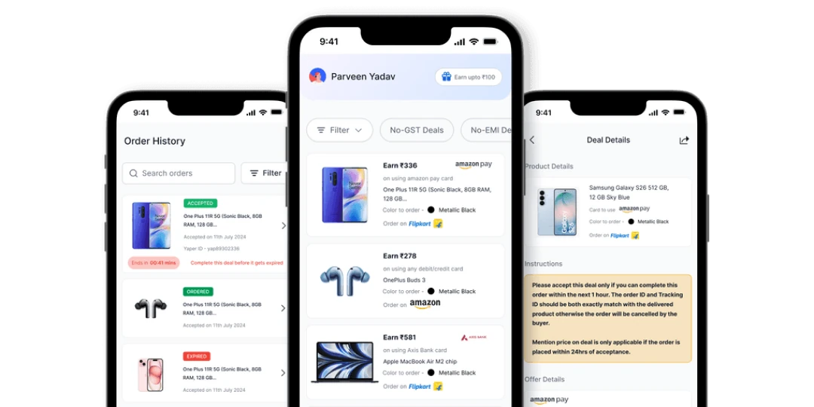
Onboarding completion65%up from 41%, when 59% dropped off
First-deal redemption44%up from a 35% redemption rate
Overall support tickets−32%fewer people needing help to finish
01Background
The product had great rewards. Almost nobody was using them.
Yaper is a credit card rewards and cashback platform operating in India's high-trust, high-regulation fintech environment. The product connects users with deals across major e-commerce platforms, earning cashback every time a qualifying purchase is completed.
On paper, the value proposition was strong. In practice, the numbers told a different story.
59%
of new users dropped off during onboarding, before seeing a single deal.
35%
first-deal redemption rate; most users who did onboard never earned anything.
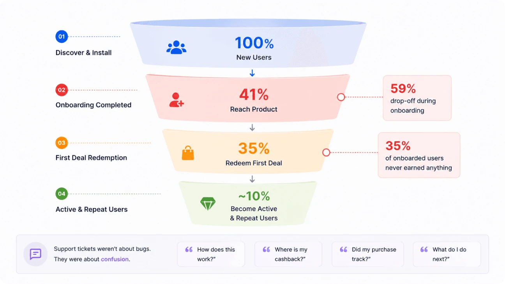
This wasn't a UI problem. It was a value communication and trust sequencing problem.The product was asking users to commit before it had shown them why they should.
02Research & discovery
Why users were leaving before the product delivered on its promise
Research inputs included 10 qualitative user interviews I ran, funnel drop-off analysis, and a competitive teardown of Perkpay, IDZO, and Piepay. A clear pattern emerged across all three: the product was asking for trust, verification, and commitment before it had earned any of it.
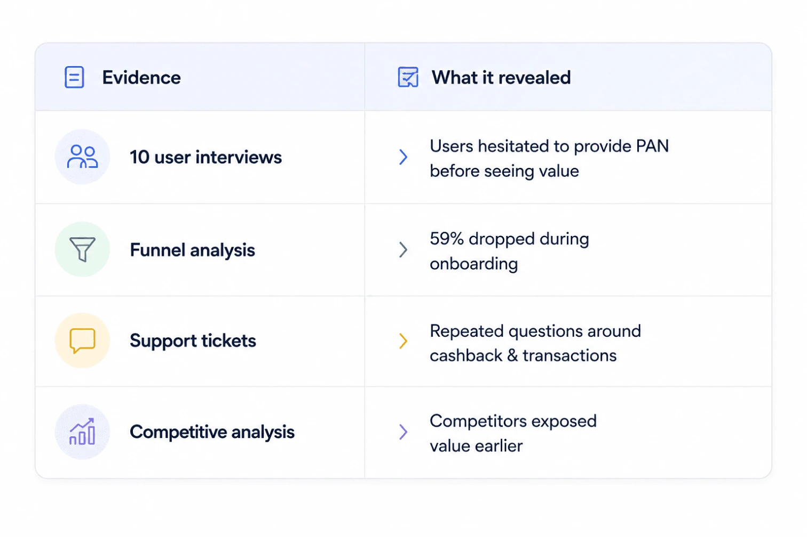
Insight 01Trust was demanded before it was earned
Users were hitting KYC and data capture screens before they'd seen a single deal or understood the product's value. One interviewee put it directly: “I don't even know what I'm signing up for yet.”
Insight 02Rewards existed but weren't perceived
The deals were there, users simply weren't finding them. Deals were buried behind navigation, not surfaced on the home screen. Discovery failure was killing activation before intent could form.
Insight 03Ambiguity was generating support load
The instructions for placing a deal order were unclear enough that users were going to support rather than completing their first redemption. Confusion at the critical moment was the retention killer.
The reframeFrom “simplify the flows” to “re-sequence value, trust, and effort, in that order.”
03Design strategy
One principle to guide every decision
Rather than treating each screen as an isolated problem, the redesign needed a single strategic principle that could be applied consistently across onboarding, the dashboard, deal redemption, and compliance flows.
Show value → earn trust → then ask for commitment.
Where trust is asked for, and where value shows up
1Sign up
2Enter number
3Enter name
4Enter email
5PAN card details
6Bank account details
7Browse deals
8Accept deal
9Deal complete
1Sign up
2Browse deals
3Accept deal
4KYC verification
5Deal complete
First value: dealsAsks for trust: PAN, bank, KYC
Step 7 of 9before a user sees their first deal
2 asks firstPAN and bank details, before any value is shown
Step 2 of 5deals appear right after sign-up
KYC at redemptionasked once there's a reason to verify
This principle directly challenged the existing product logic, where KYC and data capture came first. Getting alignment across PM, Engineering, and Compliance on this sequencing shift was one of the defining leadership challenges of the project.
Success was defined upfront with three measurable metrics: onboarding completion rate, first-deal redemption rate, and support ticket volume.
04Key decisions
Four decisions that changed the product's trajectory
01Progressive onboarding over upfront KYC
The original flow demanded PAN verification and bank details before users could browse deals. This optimized for compliance but destroyed activation; users had no reason to trust the product with that information yet.
Before: nine steps, verification first
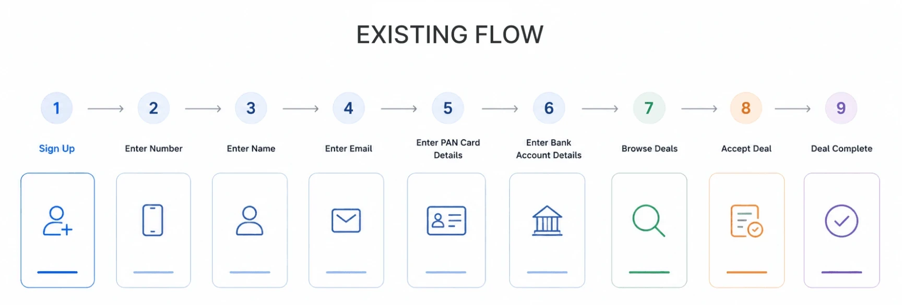
After: five steps, value first
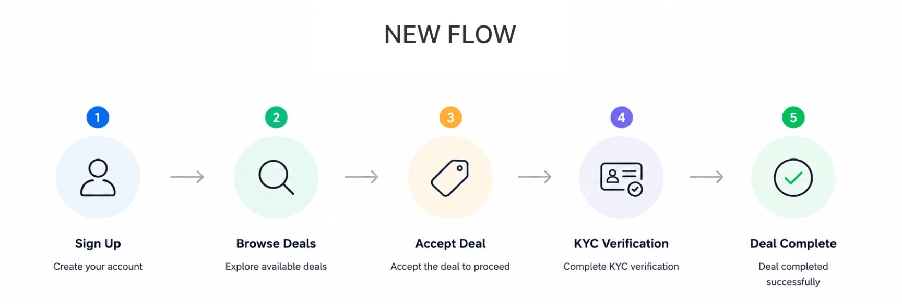
The trade-off
Delaying verification could have led to more fraud and created extra technical and compliance work. It was a significant effort for the Engineering and Compliance teams, not a small change.
The call
I facilitated alignment between PM, Engineering, and Compliance on a staged verification model: collect the minimum needed to show value immediately, and gate high-trust actions behind progressive verification steps.
Before
PAN required before browsing
Bank details upfront
No deal preview before commitment
After
Browse deals immediately after signup
KYC triggered contextually at first redemption
Progressive commitment model throughout
65%onboarding completion
02Home-first deal discovery
In the old app, deals lived behind a navigation tab. The home screen showed account info with no reward signals. Users who didn't already understand the product had no prompt to explore.
Before: account info, no deals
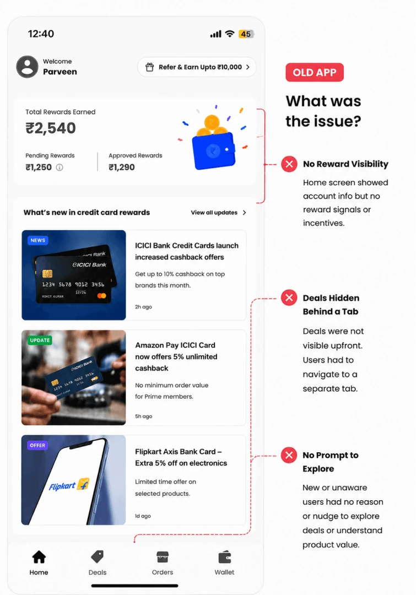
After: deals on the home screen
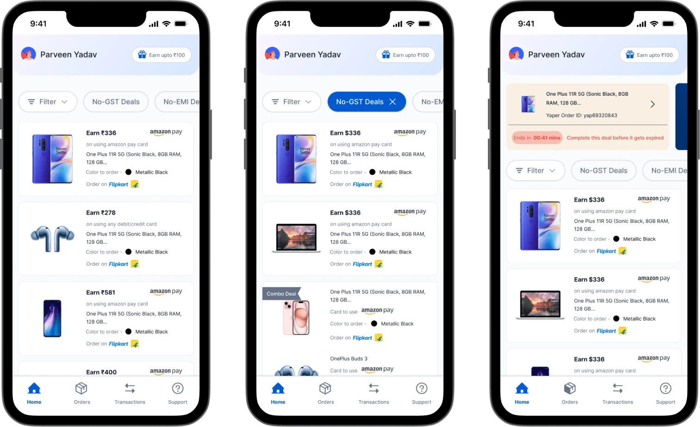
The trade-off
Moving deals to the home screen meant showing more information in one place. The screen got busier, and I chose that over keeping it minimal.
The call
Prioritized activation over visual brevity. A clean screen that users abandon is not a good design. The right measure was completion, not polish.
Before
Deals hidden in a separate tab
Home screen showed account info only
No reward signal on first view
After
Deals surfaced immediately on home
Earnings potential visible on first load
Filter and contextual deal cards above the fold
↑44%first-deal redemption, the primary metric this influenced
03Explicit guidance over “clean” UI
Yaper's deal redemption process involves real-world steps: placing an order within a time window, matching order IDs, uploading tracking details. The old UI treated these as implied. Users were failing at the critical moment because they didn't know what was expected of them.
Before: requirements implied
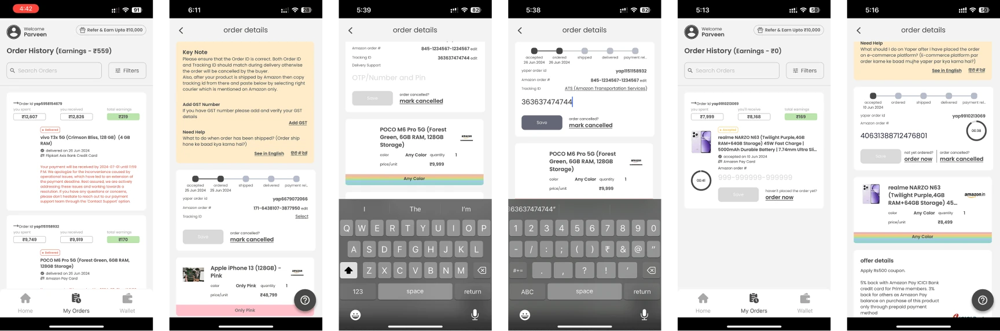
After: a step-by-step deal status
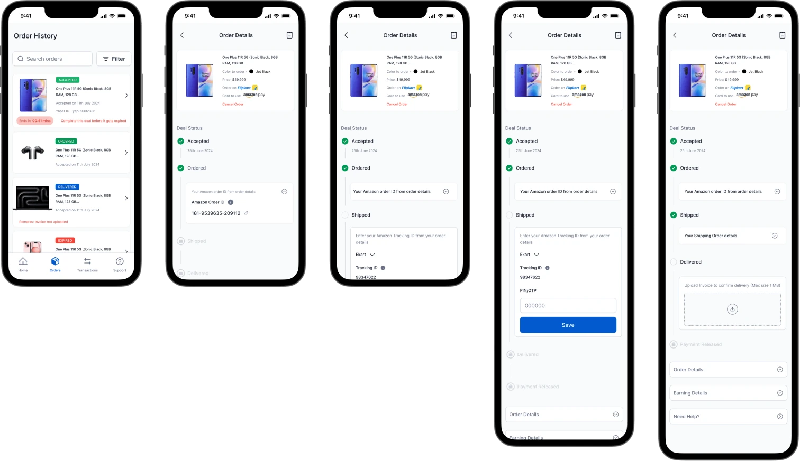
The trade-off
I chose to include more information and clear instructions, even if it made the screens longer. It may not have been the most minimal design, but it worked better for our users.
The call
I focused on helping users complete their tasks rather than making screens shorter. Instructions were made clear, easy to scan, and shown at the right time in the user journey.
Before
Instructions buried or absent
Order requirements implied, not stated
No clarity on cashback timelines
After
Key notes surfaced before deal acceptance
Step-by-step order tracking with status UI
Cashback timeline made explicit in wallet view
↓27%deal-redemption support tickets
04From wallet balance to transaction clarity
User research showed that people were confused by the wallet balance. They assumed the amount shown was ready to withdraw, but didn't understand that the money would only be transferred to their bank after the order was delivered. The transaction history also mixed received and cancelled transactions together.
Before: one balance, one mixed list
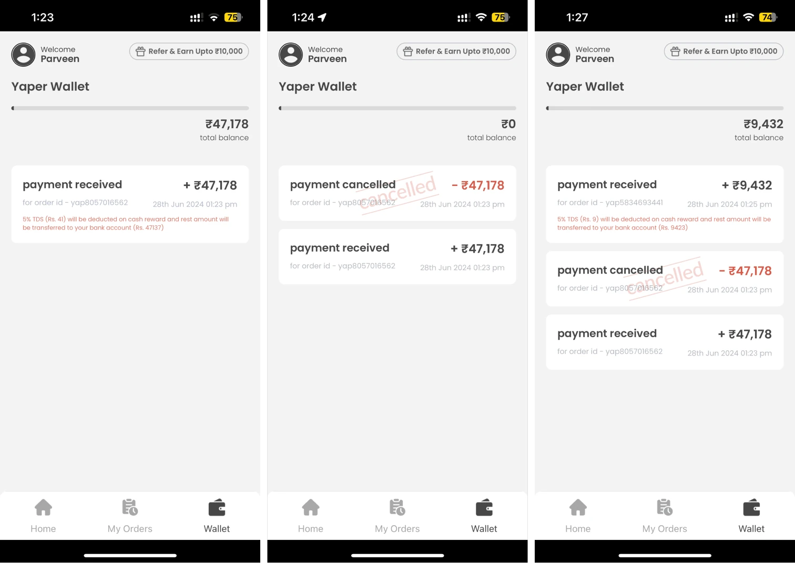
After: transaction states
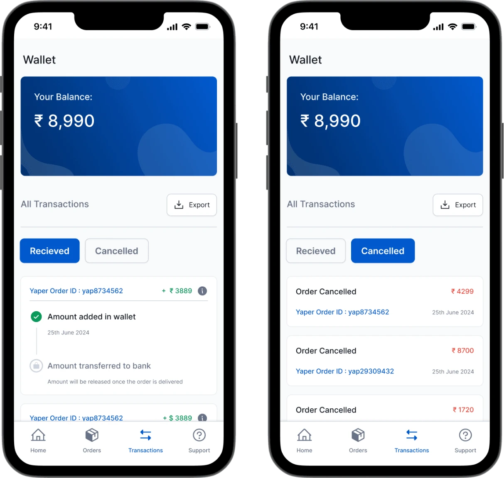
The trade-off
Instead of showing only the balance, we introduced transaction states, clearer timelines, and separate views for received and cancelled transactions. This added information to the screen, but reduced ambiguity.
The call
I renamed “Wallet” to “Transactions” and redesigned the experience around status clarity. The new flow makes the journey from order to wallet to bank transfer explicit.
Before
Wallet balance looked immediately withdrawable
No clear timeline for bank transfer
Received and cancelled transactions mixed together
“Wallet” didn't reflect the full transaction history
After
Transfer status and timing made explicit
Clear order to wallet to bank journey
Received and cancelled transactions separated
Renamed Wallet to Transactions
↓32%wallet-related support tickets
05User testing
Checking that people could finish without help
I tested the redesigned prototype with power and non-power users to validate whether the new experience was easier to understand and whether users could complete key tasks without assistance.
Participants
8
Power users
4
Non-power users
4
Key tasks
Find a relevant dealUnderstand deal eligibilityPlace an orderTrack cashbackUnderstand transaction statusFind and use the new feature
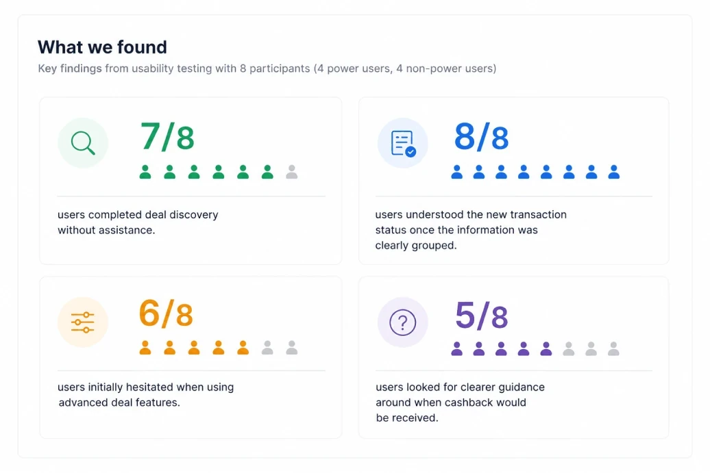
The testing showed that the core experience was easy to understand, but some advanced actions still needed more context. We responded with three changes:
Change 1Clarifying action labels
Made important actions more explicit instead of relying on familiar product terminology.
Change 2Adding contextual guidance
Introduced guidance closer to the point where users needed it.
Change 3Strengthening transaction hierarchy
Made pending, completed, and transferred states easier to distinguish.
The redesign wasn't just easier to look at.Users were able to find value faster, understand what was happening with their money, and complete key tasks with less assistance.
06Key screens
The app, before and after
Before
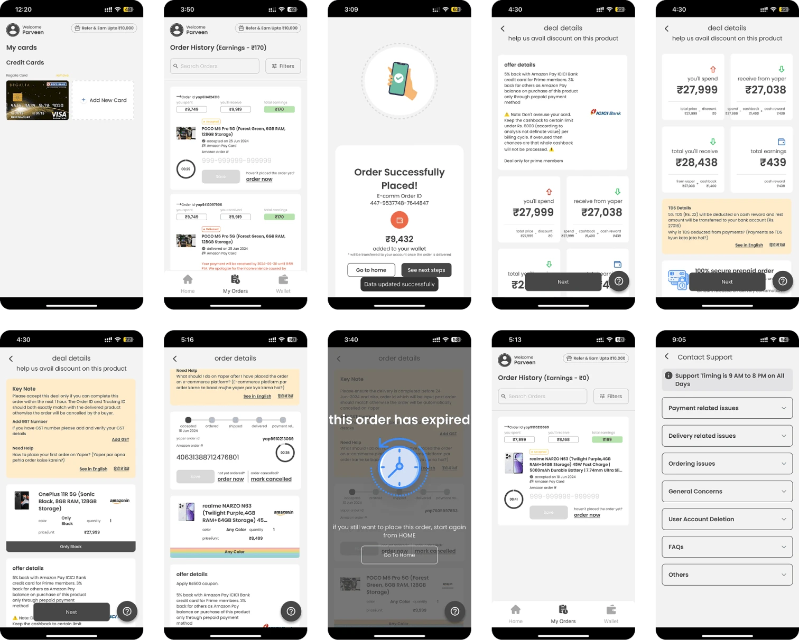
After
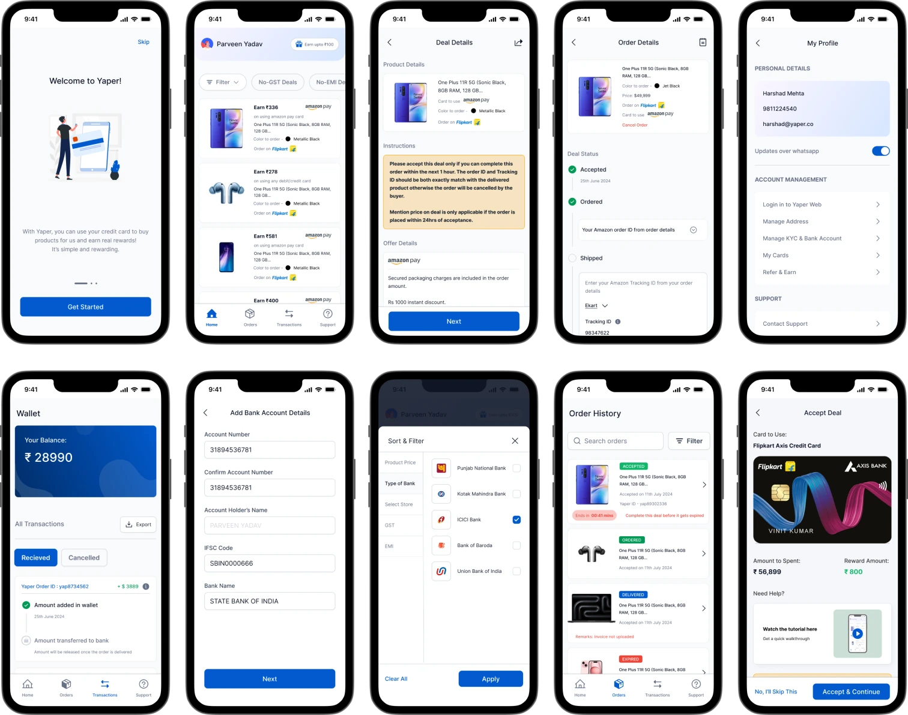
07Reflection
What this project taught me
The biggest learning: good UX isn't about removing information. It's about giving users the right information at the right moment.
Trust is a UX problem
Clear information and transparency can be just as important as visual design.
Minimalism has a business cost
A cleaner interface isn't always better if it hides information users need.
Design strategy requires alignment, not just craft
The best solutions came from balancing user needs, business goals, and technical constraints.
Phase 2Personalisation, without feeling watched.
If I were starting Phase 2, the focus would be personalisation: surfacing deals matched to a user's specific cards, spend history, and timing patterns. The infrastructure is there. The question is how to do it without making the product feel like it's watching you.